We believe security software like Kicksecure needs to remain Open Source and independent. Would you help sustain and grow the project? Learn more about our 14 year success story and maybe DONATE!
Perfect SecurityDocumentationMental ModelPrevious page: Perfect SecurityIndex page: DocumentationNext page: Mental ModelMobile Devices Privacy and Security
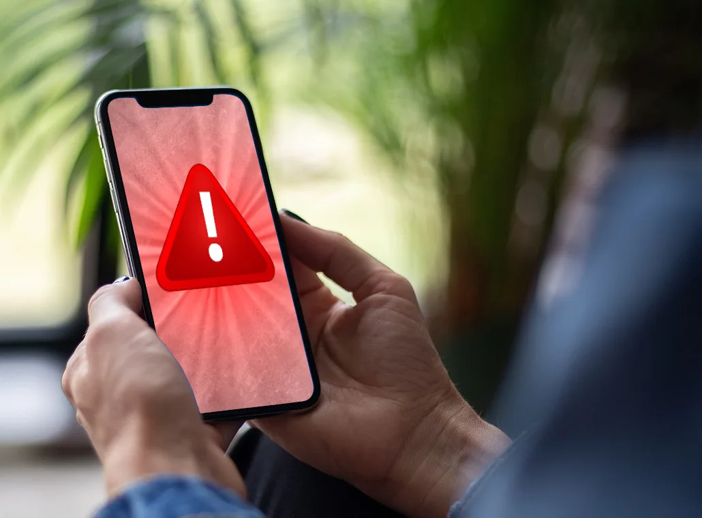
- Massive Data Harvesting by Most Phones.
- There are backdoors in most mobile devices.
- Bluetooth and Wi-Fi can also pose significant risks
- Providers can be user data mines, exploited by hackers
- There are steps to make your phone significantly safer
Summary
Mobile phones are susceptible to a large number of attacks. These encompass activities such as spying on users, tampering with their file systems, manipulating, and framing them. Attackers can harvest data, covertly record videos, track locations, and even monitor uninvolved individuals. Surprisingly, even if a phone's primary operating system is secure, a lesser-known secondary system tied to its baseband or radio functionality can override and jeopardize the entire device. (#baseband_backdoor) Another common misconception is that compromised Wi-Fi networks are no longer a threat, when in reality, they still pose significant risks to smartphones. However, with diligence, knowledge, and adaptive habits, users can harden their phones against most threats.
Introduction
Mobile phone security is a very popular topic in the public discourse, with a lot of companies offering quick fixes. However there are countless attack vectors and, while possible, it is near impossible to defend against all of them. We intend to give a comprehensive overview, show known attack vectors and vulnerabilies and give best practices to counter or even neutralize these threats. Total protection however would need to user to be extremely disciplined and change their entire habits regarding their mobile phones.
Mobile Devices Backdoors in Most Phones Tablets Etc
Quote Hugo Landau, OpenSSL developer, There are no secure smartphones. (Underline added. Bold added.):
This is a simple fact which is overlooked remarkably often.
Modern smartphones have a CPU chip, and a baseband chip which handles radio network communications (GSM/UMTS/LTE/etc.) This chip is connected to the CPU via DMA. Thus, unless an IOMMU is used, the baseband has full access to main memory, and can compromise it arbitrarily.
It can be safely assumed that this baseband is highly insecure. It is closed source and probably not audited at all. My understanding is that the genesis of modern baseband firmware is a development effort for GSM basebands dating back to the 1990s during which the importance of secure software development practices were not apparent. In other words, and my understanding is that this is borne out by research, this firmware tends to be extremely insecure and probably has numerous remote code execution vulnerabilities.
Thus, no smartphone can be considered secure against an adversary capable of compromising the radio link (called the Um link). This includes any entity capable of deploying Stingray-like devices, or any entity capable of obtaining control of a base station, whether by hacking or legal or other coercion.
It would, in my view, be abject insanity not to assume that half a dozen or more nation-states (or their associated contractors) have code execution exploits against popular basebands in stock.
So long as basebands are not audited, and smartphones do not possess IOMMUs and have their operating systems configure them in a way that effectively mitigates the threat, no smartphone can be trusted for the integrity or confidentiality of any data it processes.
This being the case, the quest for "secure" phones and "secure" communications applications is rather bizarre. There are only two possible roads to a secure phone: auditing baseband or using an IOMMU. There can't even begin to be a discussion on secure communications applications until the security of the hardware is established.
Quote Replicant developers find and close Samsung Galaxy backdoor:
While working on Replicant, a fully free/libre version of Android, we discovered that the proprietary program running on the applications processor in charge of handling the communication protocol with the modem actually implements a backdoor that lets the modem perform remote file I/O operations on the file system.
Today's phones come with two separate processors: one is a general-purpose applications processor that runs the main operating system, e.g. Android; the other, known as the modem, baseband, or radio, is in charge of communications with the mobile telephony network. This processor always runs a proprietary operating system, and these systems are known to have backdoors that make it possible to remotely convert the modem into a remote spying device. The spying can involve activating the device's microphone, but it could also use the precise GPS location of the device and access the camera, as well as the user data stored on the phone. Moreover, modems are connected most of the time to the operator's network, making the backdoors nearly always accessible.
It is possible to build a device that isolates the modem from the rest of the phone, so it can't mess with the main processor or access other components such as the camera or the GPS. Very few devices offer such guarantees. In most devices, for all we know, the modem may have total control over the applications processor and the system, but that's nothing new.
Replicant does not cooperate with backdoors, but if the modem can take control of the main processor and rewrite the software in the latter, there is no way for a main processor system such as Replicant to stop it.
See also Samsung Galaxy back-door.
Data Harvesting by Most Phones
Espionage Data Harvesting
AP Exclusive: Google tracks your movements, like it or not:
Google wants to know where you go so badly that it records your movements even when you explicitly tell it not to.
An Associated Press investigation found that many Google services on Android devices and iPhones store your location data even if you've used a privacy setting that says it will prevent Google from doing so.
Computer-science researchers at Princeton confirmed these findings at the AP's request.
Quote [1]:
Google therefore gathers detailed, fine-grained information on how the handset is being used and can link this data to the handset hardware, SIM and user email. When combined with the fine-grained location tracking via IP address made possible by the frequent nature of the requests Google Play Services makes to Google servers its hard to imagine a more intrusive data collection setup.
In research paper Android Mobile OS Snooping By Samsung, Xiaomi, Huawei and Realme Handsets lots of default data harvesting has been observed even if users use the highest privacy settings.
- location history
- IP address
- what apps are used and when,
- what app screens are viewed,
- when and for how long
- a time history of the app windows viewed
- timing and duration of phone calls, SMS texts
- logs when the keyboard is used within an app
- undeletable apps: some non-essential apps are undeletable.
- forced autostart: some non-essential apps are automatically
started in the background without user consent or awareness.
[2]
- Examples: Google Play Services, Google Play store, Google Maps, Youtube, etc. Other examples include pre-installed system apps from Microsoft, LinkedIn, Facebook.
- These forcibly autostarted and undeletable applications into the background are phoning home to their vendor and leaking data.
- hardware identifiers: IMEI, the hardware serial number, the SIM serial number, the WiFi, MAC address, and the user email address. These are all long-lived hardware identifiers that do not change between reinstalls of the app or even factory reset of the handset.
- The list of installed apps:
Potentially sensitive information since it can reveal user interests and traits, e.g. a muslim prayer app, an app for a gay magazine, a mental health app, a political news app.
- Unknown data harvesting:
On all of the other handsets the Google Play Services and Google Play store system apps send a considerable volume of data to Google, the content of which is unclear, not publicly documented and Google confirm there is no opt out from this data collection.
- Extend of data harvesting intentionally hidden from researchers
through code obfuscation:
This has also been observed in other recent studies (6), which also note the opaque nature of this data collection (no documentation, binary encoded payloads, obfuscated code).
Quote [1]:
Recall that as far as we can tell this data collection is enabled simply by installing Google Play Services, even when all other Google services and settings are disabled.
Apple iPhone iOS also harvests lots of private information. See research paper Mobile Handset Privacy: Measuring The Data iOS and Android Send to Apple And Google.
the lack of an opt out from this data collection seems in conflict with GDPR.
- https://therecord.media/google-collects-20-times-more-telemetry-from-android-devices-than-apple-from-ios/
- https://digitalcontentnext.org/blog/2018/08/21/google-data-collection-research/
- https://digitalcontentnext.org/wp-content/uploads/2018/08/DCN-Google-Data-Collection-Paper.pdf
Inescapable Data Harvesting
No opt-out. As already noted, this data collection occurs even though privacy settings are enabled. Handset users therefore have no easy opt out from this data collection.
The study was run under fair conditions. Quote:
We assume a privacy-conscious but busy/non-technical user, who when asked does not select options that share data but otherwise leaves handset settings at their default value. This means that the user has opted out of diagnostics/analytics/user experience improvement data collection and has not logged in to an OS vendor user account. The user also does not make use of optional services such as cloud storage, find my phone etc. Essentially, the handset is just being used to make and receive phone calls and texts. This provides a baseline for privacy analysis, and we expect that the level of data sharing may well be larger for a less privacy-conscious user and/or a user who makes greater use of the services on a handset.
Phones operating systems should be providing privacy by default. The user shouldn't be required to choose the right option for best privacy for lots of questions during the first time setup. But even if users choosing the the best privacy settings, lots of data harvesting was found.
extensive data collection is unnecessary
Extensive data collection by a mobile operating system is neither necessary nor essential. Quote:
/e/OScollects almost no data
However, it is hard to justify the necessity of such data collection, i.e. that users should have no opt-out, when two mobile OSes adopt an opt-in approach.
Finally, it is worth noting that it is hard to see why data collection for diagnostics cannot be carried out in a fully anonymous manner, without any use of long-lived identifiers.
This is not an endorsement because /e/OS has not been
fully reviewed on this wiki yet. See also /e/.
Conclusion
With such an extreme amount of data harvesting ongoing that cannot be disabled it was difficult for the author of this wiki page to decide which quotes are the most most relevant and intrusive. The reader might enjoy reading the research paper Android Mobile OS Snooping By Samsung, Xiaomi, Huawei and Realme Handsets for themselves for more detail.
Data Harvesting by Most Apps
The following is just an incomplete list of popular articles exposing the massive data harvesting by countless apps.
- https://mashable.com/article/facebook-android-phone-call-data-gathering
- https://arstechnica.com/information-technology/2018/03/facebook-scraped-call-text-message-data-for-years-from-android-phones/
- https://www.techspot.com/news/78062-many-most-popular-android-apps-illegally-sending-data.html
- https://www.bleepingcomputer.com/news/security/android-apps-with-45-million-installs-used-data-harvesting-sdk/
Advanced Mobile Phone Spyware
Recent revelations highlight that advanced mobile phone spyware (Pegasus) poses a serious surveillance threat. Quote The Guardian: What is Pegasus spyware and how does it hack phones?:
It is the name for perhaps the most powerful piece of spyware ever developed - certainly by a private company. Once it has wormed its way on to your phone, without you noticing, it can turn it into a 24-hour surveillance device. It can copy messages you send or receive, harvest your photos and record your calls. It might secretly film you through your phone's camera, or activate the microphone to record your conversations. It can potentially pinpoint where you are, where you've been, and who you've met. ... Pegasus infections can be achieved through so-called "zero-click" attacks, which do not require any interaction from the phone's owner in order to succeed. These will often exploit "zero-day" vulnerabilities, which are flaws or bugs in an operating system that the mobile phone's manufacturer does not yet know about and so has not been able to fix. ... Security researchers suspect more recent versions of Pegasus only ever inhabit the phone's temporary memory, rather than its hard drive, meaning that once the phone is powered down virtually all trace of the software vanishes.
Contrary to propaganda from NSO Group who develop the tool, Pegasus is already in use by many governments worldwide, posing a significant threat to journalists, human rights defenders, political opponents, businesspeople, heads of state and NGOs among others. [4] The Citizen Lab has analyzed various NSO zero-day, zero-click exploits and accurately describes their flagrant breaches of international human rights law: [5]
Our latest discovery of yet another Apple zero day employed as part of NSO Group's arsenal further illustrates that companies like NSO Group are facilitating "despotism-as-a-service" for unaccountable government security agencies. Regulation of this growing, highly profitable, and harmful marketplace is desperately needed.
Pegasus threats emphasize that even the most security-conscious individuals cannot prevent such attacks, therefore those at high-risk should limit the use of mobiles for sensitive activities whenever possible.
For further in-depth detail see:
- Forensic Methodology Report: How to catch NSO Group's Pegasus
- Independent Peer Review of Amnesty International's Forensic Methods for Identifying Pegasus Spyware
- This tool tells you if NSO's Pegasus spyware targeted your phone
- Forbidden Stories: The Pegasus Project
- NSO Group iMessage Zero-Click Exploit Captured in the Wild
- New York Times Journalist Ben Hubbard Hacked with Pegasus after Reporting on Previous Hacking Attempts
Mobile Devices Hardware Risks
Since motion sensors (accelerometer) can be turned into microphones, these are a risk too. Quote Wired: Mobile Websites Can Tap Into Your Phone's Sensors Without Asking:
Mobile apps need explicit permission to access your smartphone's motion and light sensors. Mobile websites? Not so much.
Advanced Mobile Phone Spyware show the risks introduced my mobile devices.
- A compromised mobile device could turn on the microphone and
eavesdrop without any compromise indicator noticeable by the user.
- Obviously the microphone of a compromised phone can be used for eavesdropping, see microphones warning.
- Since speakers can be turned into microphones, these are a risk too.
- The audio leakage from keyboard typing can be used to infer the words up to a certain degree of accuracy. This might reveal passwords.
- Similar risks exist for the in-built cameras (front camera and back camera), see also webcams warning.
- All content on the mobile phone can potentially be exfiltrated, including contacts, media, messages and documents.
- All browsing and communications history can potentially be monitored.
- Location data and history might be accessed by adversaries.
- Any other data or activities on the mobile phone is at risk of access/exfiltration.
In 2014, Joanna Rutkowska, security researcher, founder of Qubes OS, removed all microphones and cameras from her smartphone (iPhone) in year 2014 and posted a photo, see @rootkovska (on twitter.com) (nitter). Fast forward, 8 years later at the time of updating this wiki page, in 2022 unfortunately nobody could predict that it is also required to remove the speaker and motion sensor for hopefully full eavesdropping protection.
Mitigations are documented in chapter Best Practices.
Hacks of Telecommunication Providers
Advanced spyware is not the only risk facing users of mobile devices. In late-2021 it was revealed that state-level adversaries have hacked a number of telecommunication providers, with a persistent presence since at least 2016: [6]
- LightBasin (aka UNC1945) is an activity cluster that has been consistently targeting the telecommunications sector at a global scale since at least 2016, leveraging custom tools and an in-depth knowledge of telecommunications network architectures.
- Recent findings highlight this cluster's extensive knowledge of telecommunications protocols, including the emulation of these protocols to facilitate command and control (C2) and utilizing scanning/packet-capture tools to retrieve highly specific information from mobile communication infrastructure, such as subscriber information and call metadata.
- The nature of the data targeted by the actor aligns with information likely to be of significant interest to signals intelligence organizations.
- CrowdStrike Intelligence assesses that LightBasin is a targeted intrusion actor that will continue to target the telecommunications sector. This assessment is made with high confidence and is based on tactics, techniques and procedures (TTPs), target scope, and objectives exhibited by this activity cluster. There is currently not enough available evidence to link the cluster's activity to a specific country-nexus.
The CrowdStrike intelligence report confirms that advanced spyware tools are capable of infiltrating various telecommunications companies at present, while remaining undetected for long periods. This has allowed retrieval of highly sensitive information such as call metadata, subscriber details, telephone numbers, GPS location and other data, as well as enabling the fingerprinting of devices. As the investigation revealed core parts of mobile networks are managed by third parties, with limited evaluation and monitoring of security controls on core network systems, little faith should be placed in the security of available infrastructure to protect against advanced threats.
Mobile Security and Privacy
A complete change of mindset is required with respect to mobile devices. Considering egregious privacy violations by corporate manufacturers and the burgeoning zero-click, zero-day exploit industry that government (customers) is failing to properly regulate, mobile devices should by default be treated with suspicion.
While the majority of the public remains oblivious or purposefully ignorant to the threat of mobile devices, never forget they can:
- record your location with incredible accuracy
- track connections to other Bluetooth and Wi-Fi access points in your environment
- potentially record everything you say via voice recognition applications (or after exploitation)
- confirm all network locations
- record all communications, videos and pictures (and when/where they transpired with metadata)
- record all known accounts, such as social media, messaging applications, financial accounts and more
- generate a highly detailed profile based on applications, interests, contacts, browsing and so on
In all circumstances, conduct a personal threat assessment and consider the potential ramifications of a successful exploitation by malicious actors before using mobile devices for sensitive activities.
Bluetooth and Wi-Fi Threats
Geolocation tracking of mobile devices is not only possible by triangulating mobile antennas (see Hardware Identifiers), but also via the Wi-Fi and Bluetooth protocols. By default, popular mobile device manufacturers like Apple (i-Phone) and Google (Android) have their location-based system services ("Location Services") scan for nearby Wi-Fi access points (APs) or Bluetooth devices. [7] [8] As a database is maintained with these APs/device locations, unless disabled, mobile devices will passively scan the environment and generate location information that is more accurate than GPS.
The obvious threat is manufacturers and third parties can access this information for detailed tracking information. As Google, Apple and other tech companies are notorious for data harvesting, little faith can be placed in setting changes that disable Location Services. For example, in 2018 it was revealed that some Android and i-Phone services were storing location history even after Location Services was disabled: [9] [10]
Google services on Android devices and iPhones track and store your location data even if you turn location history off in your privacy settings, according to an Associated Press investigation.
You can turn off location history any time, but some Google apps still store your time-stamped location data, the AP reported. Google also reportedly uses this location data to target ads based on users' specific locations. ...
"Location History is a Google product that is entirely opt in, and users have the controls to edit, delete, or turn it off at any time," a Google spokesperson said in a statement. "As the story notes, we make sure Location History users know that when they disable the product, we continue to use location to improve the Google experience when they do things like perform a Google search or use Google for driving directions."
The Wi-Fi protocol does not just pose an intimate tracking threat. Malicious or "rogue" Wi-Fi APs can be easily set up by low-skilled adversaries using tools like the Wi-Fi pineapple. In essence, these devices establish an AP that can conduct MITM attacks by forcing mobile devices to disconnect from their current Wi-Fi network, while spoofing the normal Wi-Fi network at the same location with a fake set identifier (SSID). This allows attackers to eavesdrop remotely and collect sensitive personal information (such as passwords), perform malicious redirections, or generally sniff traffic. [11] In general, end users do not normally check their device settings for possible rogue APs since the Internet remains accessible during this attack; most will simply trust they have a secure connection. This is one reason why the literature recommends using Tor and/or a VPN when utilizing public Wi-Fi APs, because it obfuscates traffic from potential rogue operators.
Finally, both Bluetooth and Wi-Fi on mobile devices have a unique MAC Address which is necessary for a mobile device to identify itself on the network. Traditionally all devices have used the same MAC addresses across all networks, making it easy for network operators and observers to link that address to specific network activity and locations over time. [12] However, later operating system versions of Android and i-Phone are reported to either automatically generate, or have settings for, random Bluetooth and Wi-Fi MAC addresses (without jailbreaking the device). [13] [14] At a minimum these settings should be confirmed, but again it is safer to either disable these protocols when possible, or not carry a mobile device to sensitive locations.
Hardware Identifiers
Various identifiers are available to uniquely identify and locate mobile devices, including International Mobile Equipment Identity (IMEI) and International Mobile Subscriber Identity (IMSI).
International Mobile Equipment Identity (IMEI)
IMEI is a 15 or 17-digit number, usually unique, which is used to identify valid mobile devices on networks (including some satellite phones). [15] It can be used to stop stolen devices from accessing the network via a blocklist, even if the subscriber identity module (SIM) is changed. [16] It can also be used to locate lost devices, as various services and applications already provide this function. [17]
Police, military and government agencies use IMEI as a tracking device, as it can locate mobile devices to within a few meters. The reason is when a mobile device connects to towers, the IMEI and other unique identifiers are shared. Therefore agencies can easily verify the physical location of all phones in a given location, as this information is shared with the government and is subject to warrants and other requests. For example: [18]
- The military utilize IMEI for targeted drone strikes. [19]
- Saudi authorities have used IMEI to track women fleeing the regime.
- Changing the SIM card will only change the IMSI number (see below) and the IMEI number is unchanged; this action just alerts mobile device companies that a new SIM has been inserted. [20]
- The IC already utilize IMEI/IMSI catchers for geo-location tracking, eavesdropping, traffic interception and identity extraction. [21] [22] In simple terms, "fake" mobile towers perform a Man-in-the-middle (MITM) attack between the target mobile device and the service provider's real towers.
The only ways to avoid IMEI tracking are: replacing the handset; physical removal and replacement of a chip to obtain a new IMEI (illegal in many jurisdictions); utilizing a phone with reprogrammable IMEI; or using devices without a SIM card slot (as they do not have an IMEI). Notably, many jurisdictions require IMEI registration in order to access mobile networks.
International Mobile Subscribed Identity (IMSI)
IMEI is only linked to the device and does not have a particular relationship to the subscriber; that function is related to the IMSI number. IMSI is usually a 15-digit number that uniquely identifies every user of a cellular network, as it is sent by the mobile device to the network: [23]
The first 3 digits represent the mobile country code (MCC), which is followed by the mobile network code (MNC), either 2-digit (European standard) or 3-digit (North American standard). The length of the MNC depends on the value of the MCC, and it is recommended that the length is uniform within a MCC area. The remaining digits are the mobile subscription identification number (MSIN) within the network's customer base, usually 9 to 10 digits long, depending on the length of the MNC.
Notably the IMSI is linked to mobile subscriptions or pre-paid plans, the phone number provided by a mobile service, and is hardcoded on the SIM card so it cannot be changed. As both the IMEI and IMSI are registered every time a mobile network connection is made, it is easy for agencies to track this information and query it as necessary.
Numerous IMSI vulnerabilities exist for potential exploitation:
- While the IMSI is rarely transmitted and is instead replaced by a temporary mobile subscriber identity (TMSI) to try and prevent eavesdroppers/hackers and identity verification, [24] recent 4G and 5G hacks re-enabled the effectiveness of "Stingray Attacks" via IMSI catchers. [25]
- Researchers have demonstrated IMSI catcher attacks are possible via the Wi-Fi protocol, allowing detailed tracking and MITM attacks. [26]
- Numerous devices are available to exploit IMSI for either passive dragnet surveillance or for targeted attacks; see here.
Conclusion
Changing the SIM card (IMSI) and keeping the same phone does not provide privacy.
Changing the phone (IMEI) and using the same SIM card does not stop tracking either.
This because IMEI and IMSI are routinely linked together ("married") in the mobile network operators database.
In summary, it is evident the IMEI and IMSI identifiers alone pose serious privacy and security threats to mobile devices. Mobile operators and mobile OS software routinely store this information, and the existing protocols are prone to exploitation and allow detailed tracking of movements due to mobile tower triangulation. "Anonymous SIMs" are also a mirage because this will not change the underlying IMEI identifier linked to the handset, which can normally be traced to the purchaser. Further, advanced IMEI/IMSI catcher technology makes it highly like that any targeted mobile device can be easily exploited.
If a mobile device is required for truly anonymous activity, then the best chance is sourcing a dedicated anonymous burner and a dedicated SIM card. This would necessitate a new anonymous phone and SIM card (pre-paid with cash) that cannot be linked to you personally. Achieving this goal is difficult -- and potentially illegal depending on the jurisdiction -- and is outside the scope of this documentation.
SIM-based Threats
Simjacker Attack
The AdaptiveMobile Security Threat Intelligence group confirmed in late-2019 that vulnerabilities linked to technology embedded on SIM cards are being actively exploited. The Simjacker attack: [27] [28] [29]
- Utilizes an SMS with malicious code sent to target mobile devices, which then instructs the SIM Card via the "S@T Browser" [30] to takeover the mobile and retrieve or perform sensitive operations. Essentially the S@T Browser library is used as an execution environment that can trigger logic on the handset.
- Researchers observed the primary information sought is the location (cell ID) and specific device information (IMEI) of handsets, which is then sent back to the attacker via another SMS.
- This exfiltration takes place without any observable change on the target handset.
- With the STK
command set, this same technique can also perform:
- misinformation - sending SMS messages with attacker content
- fraud - dialling costly numbers
- espionage - act as a listening device
- malware-spreading - opening malware-loaded web pages
- denial of service - disabling the SIM card
- information retrieval - language, battery level etc.
- A wide range manufacturer devices are affected, including Apple, ZTE, Motorola, Samsung, Google, and Huawei. [31]
Fortunately this attack has been reported to mobile manufacturers and steps are being taken to close this security hole, including new security recommendations for the S@T Browser technology.
SIM Swapping Attack
In this attack, a target's account is taken over via fraudulent methods that exploit weaknesses in two-factor authentication (2FA) or two-step verification that rely upon SMS text messages or calls placed to a mobile device. The attack has several steps: [32]
- Attackers gather information about the intended target, using methods like social engineering, phishing emails or purchasing it from criminal networks.
- Once details are harvested, the mobile provider is contacted and convinced to shift the target's phone number to the attacker's SIM. [33]
- If successful, the target's phone loses its network connection and instead the attacker receives all SMS and voice calls intended for the target.
- This information then allows the attacker to access various accounts that rely on 2FA methods (one-time passwords) utilizing SMS text messages or phone calls. Further, many accounts can have passwords reset just by having a listed recovery phone number.
A successful exploitation potentially allows attackers to steal funds from financial accounts, engage in extortion, or sell personal information on the black market.
Malicious SMS Re-routing
Users who are not exploited by a SIM Swapping Attack can still have messages intercepted by attackers using malicious SMS re-routing. In simple terms, attackers use legitimate text messaging services like Sakari to re-route messages intended for business landlines, VoIP phones or mobile devices. In this case, all that is required is the purchase of a cheap plan, signing up with a target's number, and the completion of a Letter of Authorization (with fake information) "confirming" no unlawful, harassing or inappropriate behavior will be conducted. [34]
This attack vector is often overlooked, but highlights that commercial SMS tools are largely unregulated and there are severe weaknesses in the existing telecommunications infrastructure. As per SIM swapping attacks, the ability to intercept SMS text messages will in many cases allow access to the associated accounts of targets via login requests. Perhaps worse, the target/s will never be aware an attack even took place because they will simply not receive messages intended for them.
Companies alerted to this attack have subsequently added a security feature so that calls are placed with users, requiring a security code be sent back to the company to confirm they have consented to a number's transfer. In other cases, a text message is sent to another number of the user or their email address. However, in the absence of a standardized global protocol for text messaging forwarding or improved customer authentication by telecommunication providers, this attack vector will probably remain viable with other providers in the near term who have not improved their security practices.
Telephony Protocols
SS7 Vulnerabilities
The Signaling System No. 7 (SS7) is a set of telephony signaling protocols used by telecommunications network operators to talk to each other. This standard has been utilized for older telephony standards such as 3G, 2G and earlier and is being replaced with the Diameter protocol for 4G and 5G networks. In simple terms it supports mobile devices and needed services like roaming, SMS and data -- everything that is unrelated to call signalling. Unfortunately, the protocol has a long history of vulnerabilities: [35] [36] [37]
- tracking of mobile device users
- text and call interception
- eavesdropping by using the protocol to forward/re-route calls
- facilitation of decryption by requesting the caller's carrier release a temporary encryption key to unlock communications (after recording)
- bypassing of 2FA authentication by routing SMS and confirmation calls to attacker-controlled numbers
- denial of service - disabling of calls, SMS and data
- various de-anonymization attacks
- decrypting calls captured off the air
These are fundamental weaknesses in the protocol and there are very limited countermeasures that users can take to protect themselves. For further reading on this topic, see: Tracking the Trackers: The most advanced rogue systems exploiting the SS7 Network today.
Diameter Vulnerabilities
As noted above, the Diameter protocol is the telephony and data transfer standard in use with today's 4G and 5G networks, which is slowing replacing SS7. Unfortunately it has proven to have many of the same vulnerabilities that are present in the older SS7 standard, despite using encryption for authentication procedures: [38] [39] [40] [41] [42] [43]
- Legacy vulnerabilities in the protocol and misconfiguration means the same SS7 threats have been inherited, including tracking of a user's location, interception of sensitive information, and downgrades to insecure 3G networks.
- Denial of Service (DoS) attacks have been demonstrated on all mobile networks, including 5G networks.
- A high frequency of attacks related to disclosure of subscriber information, location, and network information; this can be used to intercept voice calls, change billing arrangements, and restrict mobile services.
- Critical security capabilities of the Diameter protocol are often not enabled. For example, if authentication safeguards are not enabled, attackers can imitate legitimate roaming activity to intercept calls and text messages.
A wealth of research highlights that the Diameter protocol will not automatically solve existing SS7 vulnerabilities, and it is highly likely to be exploited by attackers with increasing frequency as it slowly becomes the dominant protocol world-wide.
Preventative Measures
Best Practices
As outlined in the introduction, threats to mobile devices are increasing in number, scope and complexity. Therefore a complete change in user behavior is necessary to better protect personal devices and information. In general, the more device features that are enabled, the greater the loss in security -- avoid enabling features simply for personal convenience. [44]
Miscellaneous
Setting / Behavior |
Recommendation |
Security Benefit |
|---|---|---|
Abstinence |
Move and/or power off mobile devices. |
Since many of the following best practices (such as remove phone microphones, speaker, webcam, GPS, bluetooth, sim card) are admiringly difficult, cumbersome, uncomfortable, unfeasible to adhere, it might be easier to physically move all mobiles devices to a distant physical location such as a different room and close the door and/or to power mobile devices. |
Activism |
|
Support of hardware and software producers that respect user freedom and privacy. |
Control |
|
Partial protection against close access physical attacks. |
Conversations |
Avoid having sensitive conversations near mobile devices. |
Near-complete protection against eavesdropping threats (if the device is compromised). |
Hardware
Setting / Behavior |
Recommendation |
Security Benefit |
|---|---|---|
Bluetooth |
|
|
Baseband audited |
Devices with audited baseband chips should be used. |
Mitigation of the baseband backdoor. |
Case |
|
Near-complete protection against room audio/video collection. |
Cameras |
Front cameras, back cameras and webcams should be physically removed. With some devices, a USB webcam can be attached during times when this is needed. |
Reduces risk of surveillance by compromised mobiles. |
Google Play Services |
|
Much higher privacy. |
Location |
|
|
Microphones |
Microphones should be physically removed. In some cases, a headphone can be connected during times when a microphone is needed. |
Reduces risk of eavesdropping by compromises mobiles. |
Motion sensor (accelerometer) |
Motion sensor (accelerometer) should be physically removed since it can be turned into a microphone if possible [45] and mobile websites can use it even without permission. |
Reduces risk of eavesdropping by mobile websites, apps and compromises devices. |
Speakers |
Speakers should be physically removed since speakers can be turned into microphones. In some cases, a headphone or speaker can be connected during times when a audio output is needed. |
Reduces risk of eavesdropping by compromises mobiles. |
Sim Cards |
Sim cards should be avoided. |
Reduces risk of location tracking. |
Trusted Accessories |
|
Partial protection against close access physical attacks or supply chain attacks. |
Wi-Fi |
|
|
Software
Setting / Behavior |
Recommendation |
Security Benefit |
|---|---|---|
Applications |
|
Official store application updates provide partial protection against:
Updated software and applications provide partial protection against:
|
Attachments / Links |
Do not open unknown email attachments and links:
|
Partial protection against spearphishing and malicious applications. |
Biometrics |
As noted in the 2FA chapter, do not rely on biometric IDs to protect information or for authentication. [46] |
|
IOMMU |
Devices which unaudited baseband processors should at lease use IOMMUs and have their operating systems configure them in a way that effectively mitigates the threat. |
Mitigation of the baseband backdoor. |
Key Generation |
|
Reduces risk of weak keys due to broken/compromised random number generator risks due to advanced hardware threats. |
Modification |
Avoid jailbreaking or rooting mobile devices. |
This process can lead to security weaknesses, undermine built-in security measures, and increase the risk of infection by viruses and malware (since software can be installed that is not vetted by hardware manufacturers). |
Passwords |
|
Partial protection against close access physical attacks. |
Pop-ups |
Unexpected pop-ups are usually malicious -- follow advice for your particular device (such as Android) to safely remove the offending software. [47] |
Provides partial protection against the theft of personal or sensitive information, or other malicious activities. |
Power |
On a weekly basis, power the mobile device off and then on again. |
Partial protection against spearphishing and zero-click exploits. |
Operating System |
Choose a secure, user privacy and freedom respecting mobile operating system, if available. See also Mobile Operating System Comparison. |
Security, privacy, user freedom. |
Text Messages and Video / Voice Calls |
|
Partial protection against:
|
Phone Number Registration Unlinked to SIM Card
SIM cards pose a risk to privacy and also introduce the potential for backdoors and vulnerabilities; for these reasons they are best avoided, particularly for anonymous use of applications. For applications requiring phone number registration, it is possible to use services that provide alternative, online numbers that are linked to a personal account.
Numerous services provide online numbers, but those which are well-tested and use (mainly) free software, such as JMP, are recommended. In simple terms, JMP provides an XMPP to SMS gateway service. This means a real phone number can be chosen and used for calls worldwide, texts, group messages, and so on: [48]
JMP gives you a Canadian or US phone number* that is yours to keep. JMP allows you to send and receive text and picture messages using any Jabber client. You can also make and receive phone calls, including receiving voicemails delivered to you as audio recordings and text transcriptions.
You can use JMP to communicate with your contacts without them changing anything on their end, just like with any other telephone provider. JMP works wherever you have an Internet connection. JMP can be used alongside, or instead of, a traditional wireless carrier subscription.
Registration and use of gateway services require monthly payments, so investigate available cryptocurrency payments methods if the phone number is intended for anonymous activities. The example below shows how to configure the JMP service.
1. Select one of the numbers located on the main JMP page.
Figure: Phone Number Selection
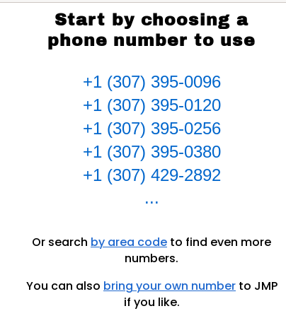
2. Select "I need to sign up.." option if you dont have jabber account.
Figure: New jabber ID signup
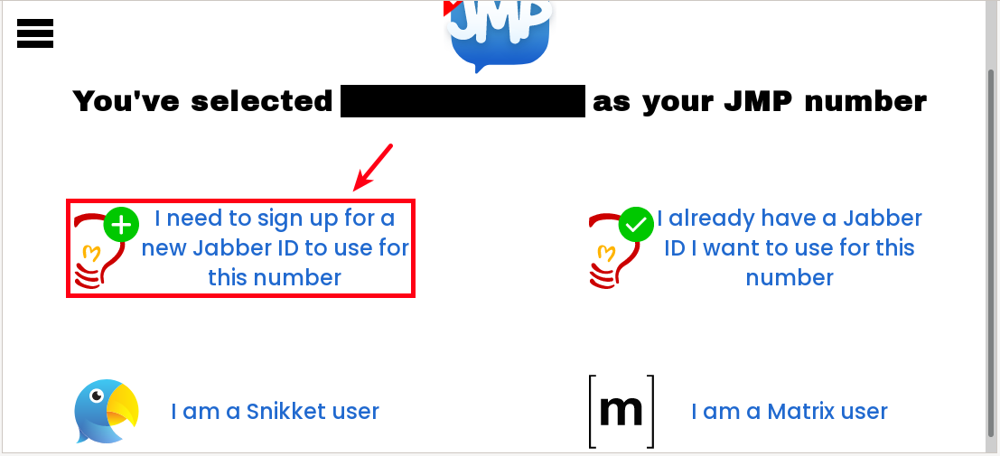
3. Press on "Get one from ChatterboxTown" option (it will open in a new tab, dont close jmp registration page as we gonna need it later).
Figure: Choosing ChatterboxTown for Jabber ID
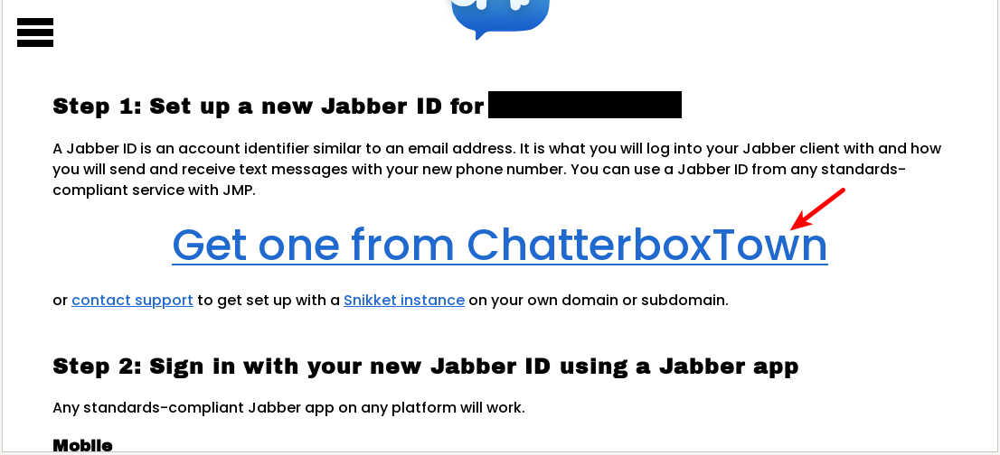
4. Select account creation server.
Figure: Choosing jabber server
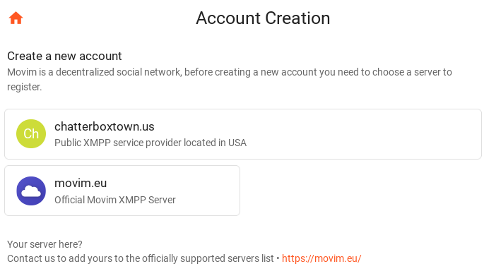
5. Perform "web registration".
After selecting a server:
Complete necessary fields→Click on "Create""Account successfully created"
Figure: Complete Web Registration
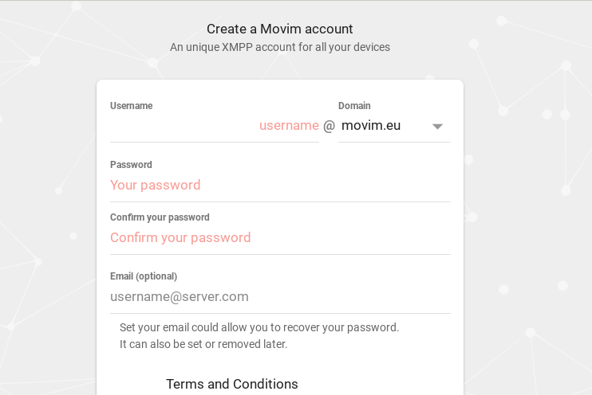
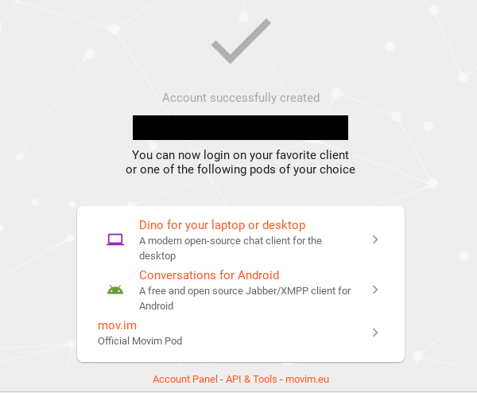
6. Sign into the account with a recommended Jabber/XMPP client. [49]
Figure: Account Login
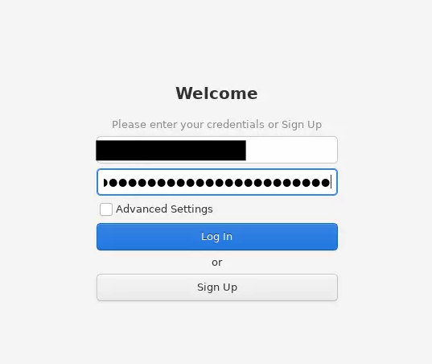
7. Press on Continue on JMP
registration page (which we kept it open).
Figure: Continuing to register Jabber ID in JMP
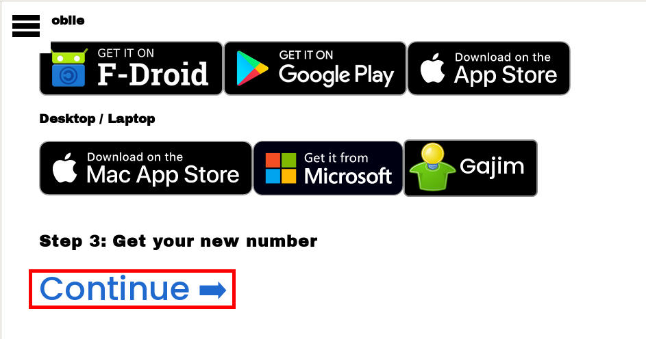
8. Add and submit your Jabber ID in the empty field.
Figure: Enter Jabber ID Details
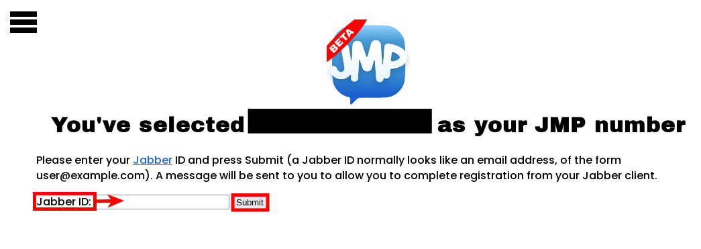
9. Confirm Jabber ID linkage with JMP.
As the Jabber ID was linked with a selected number from JMP, a message should be sent to the Jabber/XMPP account.
Figure: JMP Confirmation Messages
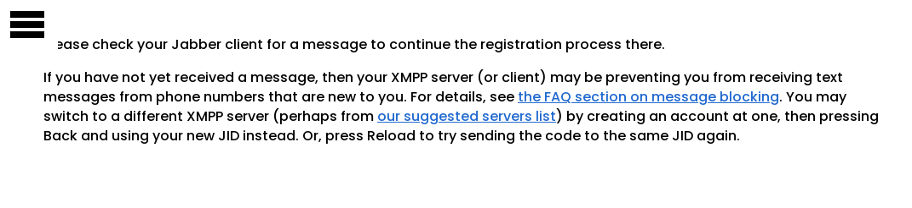
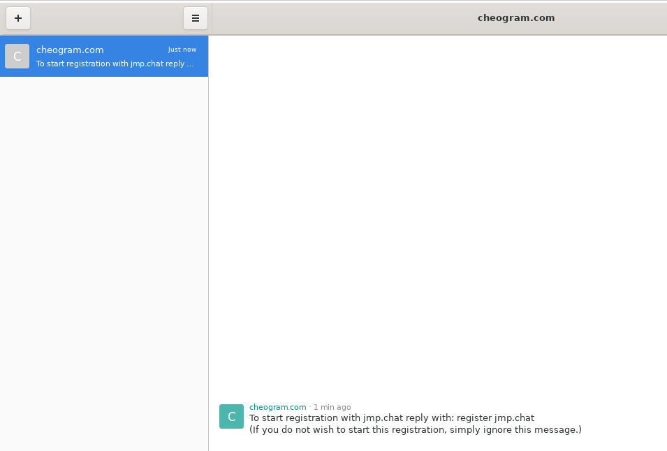
10. Complete payment for the account.
Follow the message instructions to:
- type and send "register jmp.chat"; and
- choose a method of payment
Figure: Finalize JMP Account Payment
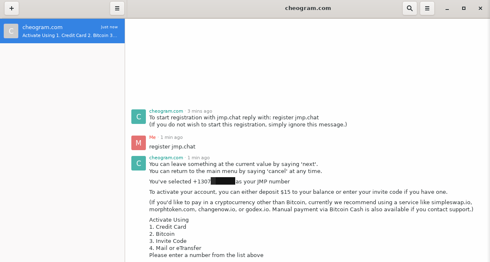
11. Check the account was activated.
After successful payment an activation message will be sent to the Jabber/XMPP account. It is now possible to use the number for various activities; see here for further details.
Figure: Account Activation Message
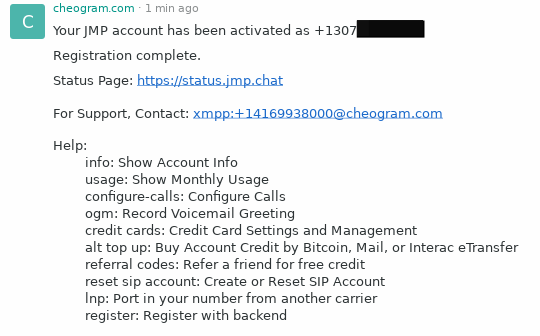
12. Test functionality of the new phone number.
It is recommended to perform a small test to confirm the number is working correctly. In the example below, an Element Matrix account is linked with the JMP number, which leads to a Matrix verification message being sent to the Jabber/XMPP account.
Figure: Matrix Verification Message
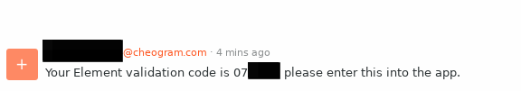
After entering the verification code, the account will be linked successfully to the phone number in use.
Figure: Successful Matrix Account Linkage
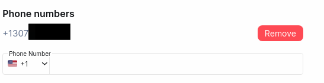
Registration Locks
To minimize the threat of various SIM-based attacks, consider setting a registration lock; prefer messengers or other chat applications that support a Registration Lock PIN over SMS. This prevents someone who gains access to your mobile number from performing re-registration unless they have the associated PIN number:
- Signal messenger:
three dots→settings→privacy→scroll down→Registration Lock PIN - Telegram:
settings→privacy and security→two factor authentication - WhatsApp:
settings→account→Two-step verification
Personal Information
It is hazardous to share personal information online. To reduce the chance of successful attacks: [50]
- Avoid providing personal information in response to calls, emails, or text messages that request it because they could be phishing attempts. It is far safer to directly contact companies using verified phone numbers or legitimate websites.
- Avoid oversharing personal information online; for example, do not post personal details like your full name, address or phone number on public websites. This only assists attackers in answering security-related questions on personal accounts.
- In the event you are exploited or exploitation is suspected:
- Contact the mobile service provider to regain control of your phone number.
- Also contact important companies to check for unauthorized changes/charges on accounts, such as credit cards, banks and other financial accounts.
- Inform all contacts of a possible SIM swapping attack. In the event they receive any requests for money or other strange requests, encourage them to call you instead to confirm.
Two-factor Authentication
Always utilize 2FA for important accounts to prevent unauthorized changes. Prefer strong implementations like physical keys, authenticator applications/ToTP, and push-based 2FA. Do not rely on biometrics, SMS, email or voice-based 2FA.
Phone Number Security Compartmentalization
Consider using at least two different mobile phone numbers. The first number should be given to friends, "real people", colleges and other non-sensitive contacts. The second phone number should only be provided to banks, financial institutions and perhaps other money-sensitive services that require SMS as a second authentication factor or as a means to contact you.
The rationale is people you know might give your mobile number to others, or their mobile phone may be hacked or stolen. This increases the risk your mobile number might end up being published on the internet, thereby making you a potential target for a SIM swapping attack. However, if different phone numbers are used in different places/contexts, a SIM swapping attack would cause far less damage.
Another reason is the mobile device which is carried outside and used on a daily basis is more likely to be stolen or lost compared to one which is kept in a safe(er) location most of the time. Therefore, in these circumstances a thief using your everyday phone is denied an opportunity to fraudulently access any financial accounts.
Administrative Rights
Most sold mobile devices (Android, iOS) come with Administrative Rights Refusal (non-root enforcement) anti-feature, denying administrative rights ("root") to users. Thereby, device owners are degraded to limited users with limited rights (non-administrators) on their own devices.
For a list of anti-features as a result of this, see resign-android-image.
See also Definition of Rooted.
Unfortunately, the following has been true for most devices.
Rooting an Android or iOS device comes with both benefits and risks. Here are the main risks associated with rooting:
1. Voided Warranty: Rooting usually voids the warranty of your device, which means manufacturers may not provide support or repairs.
2. Bricking the Device: Rooting, if done incorrectly, can potentially "brick" your device, making it unusable and turning it into a non-functional piece of hardware.
3. Security Vulnerabilities: Rooting bypasses many of Android's built-in security measures, which makes your device more susceptible to malware and hacking. Root-level access allows malicious apps to gain complete control over your device.
4. Apps Compatibility Issues: Some apps, especially banking and payment apps, may not work on a rooted device. Device Attestation such as SafetyNet detects rooting, leading to some apps refusing to run.
5. Performance Instability: Modifying system files and using custom ROMs may lead to crashes, reduced performance, or even overheating issues.
6. No More Automatic Updates: After rooting, you might stop receiving official over-the-air (OTA) updates from the manufacturer. This may prevent your device from receiving important security patches.
7. Malicious Root Management Tools: Root management tools are sometimes available only from questionable sources and might contain malware.
While rooting gives you more control over your device (like customizations and access to restricted features), the risks should be carefully weighed, especially regarding security, stability, and warranty.
This is not to discourage users from rooting. Administrative rights refusal (anti-rooting) is part of the War on General Purpose Computing as mentioned on General Threats to User Freedom. Users should consider supporting manufacturers and operating systems that support user freedom, alternative operating systems and permit users to be administrators of their own devices. See also Mobile Operating System Comparison.
External
- Kraken - Security Advisory: Mobile Phones
- Property of the People: March 2019 FBI CAST Cellular Analysis & Geo-Location Field Resource Guide [51]
- https://www.nitrokey.com/news/2023/smartphones-popular-qualcomm-chip-secretly-share-private-information-us-chip-maker
See Also
- Mobile Operating System Comparison
- Phone Number Validation vs User Privacy
- Two-factor Authentication (2FA)
- https://www.devever.net/~hl/logindenial
- https://www.jefftk.com/p/how-likely-is-losing-a-google-account
Footnotes
- The research paper https://www.scss.tcd.ie/Doug.Leith/pubs/contact_tracing_app_traffic.pdf is about contact tracing apps but the analysis of Google Play Services which runs by default on all stock android devices applies with or without any installed contact tracing apps.
It is worth noting that much of the functionality of the Android OS3 is provided by so-called system apps. These are privileged pre-installed apps that the OS developer bundles with the OS. System apps cannot be deleted (they are installed on a protected read-only disk partition) and can be granted enhanced rights/permissions not available to ordinary apps such as those that a user might install. It is common for Android to include pre-installed third-party system apps, i.e. apps not written by the OS developer. One example is the socalled GApps package of Google apps (which includes Google Play Services, Google Play store, Google Maps, Youtube etc). Other examples include pre-installed system apps from Microsoft, LinkedIn, Facebook and so on. We intercept and analyse the data traffic sent by the Android OS, including by pre-installed system apps, in a range of scenarios.
- Quote Android
Mobile OS Snooping By Samsung, Xiaomi, Huawei and Realme Handsets:
Recording of user interactions with handset. System apps on several handsets upload details of user interactions with the apps on the handset (what apps are used and when, what app screens are viewed, when and for how long). The effect is analogous to the use of cookies to track users across web sites. On the Xiaomi handset the system app com.miui.analytics uploads a time history of the app windows viewed by the handset user to Xiaomi servers. This reveals detailed information on user handset usage over time, e.g. timing and duration of phone calls. Similarly, on the Huawei handset the Microsoft Swiftkey keyboard (the default system keyboard) logs when the keyboard is used within an app, uploading to Microsoft servers a history of app usage over time. Again, this is revealing of user handset usage over time e.g. writing of texts, use of the search bar, searching for contacts. Several Samsung system apps use Google Analytics to log user interactions (windows viewed etc). On the Xiaomi and Huawei handsets the Google messaging app (the system app used to send and receive SMS texts) logs user interactions, including when an SMS text is sent. In addition, with the notable exception of the /e/OS handset, Google Play Services and the Google Play store upload large volumes of data from all of the handsets (at least 10× that uploaded by the mobile OS developer). This has also been observed in other recent studies (6), which also note the opaque nature of this data collection.
Details of installed apps. Samsung, Xiaomi, Realme, Huawei, Heytap and Google collect details of the apps installed on a handset. Although less worrisome than tracking of user interactions with apps, the list of installed apps is potentially sensitive information since it can reveal user interests and traits, e.g. a muslim prayer app, an app for a gay magazine, a mental health app, a political news app. It also may well be unique to one handset, or a small number of handsets, and so act as a device fingerprint (especially when combined with device hardware/system configuration data, which is also widely collected). See, for example, (9), (10) for recent analyses of such privacy risks and we note that in light of such concerns, Google recently introduced restrictions on Play Store apps collection of this type of data4 , but such restrictions do not apply to system apps since these are not installed via the Google Play store.
Who Is Collecting Data? 1) Mobile OS Developers: We observe that Samsung, Xiaomi, Realme and Huawei all collect data from user handsets, despite the user having opted out of data collection/telemetry/analytics and making no use of services offered by these companies. This data is tagged with long-lived identifiers that tie it to the physical device, including across factory resets.
2) Pre-installed Third-Party System Apps: System apps are pre-installed on the /system partition of the handset disk. Since this partition is read-only, these apps cannot be removed. They are also privileged in the sense that they can be assigned permissions without needing user consent, be silently started, etc.
The Samsung handset studied also contains pre-installed system apps from Microsoft that send handset telemetry data to mobile.pipe.aria.microsoft.com, app.adjust.com (a third-party analytics company17) and use Firebase push messaging. A LinkedIn (now owned by Microsoft) system app also sends telemetry to www.linkedin.com/li/track. This third-party data collection occurs despite no Microsoft/LinkedIn apps were ever opened on the device, and no popup or request to send data was observed.
In addition to mobile operator system app sharing data on the Xiaomi handset, a pre-installed Facebook app collects data.
3) Google System Apps (GApps):
It is known that Google Play Services and the Google Play store send large volumes of handset data to Google and collect long-lived device identifiers, although until recently there has been a notable lack of measurement studies (see (6), (16)). Other Google apps such as YouTube and Gmail also send handset data and telemetry to Google. It is worth noting that the volume of data uploaded by Google is considerably larger than the volume of data uploaded to other parties.
Figure: Data harvesting with settings already configured for highest privacyRecall that this is despite the "usage & diagnostics" option being disabled for Google services on all handsets (and also the diagnostics/analytics options also being disabled for the mobile OS developers, see Section IV-B). Note however that from a privacy viewpoint it is not the volume of data that is primarily of concern, but rather the contents of that data and the frequency with which it is sent.
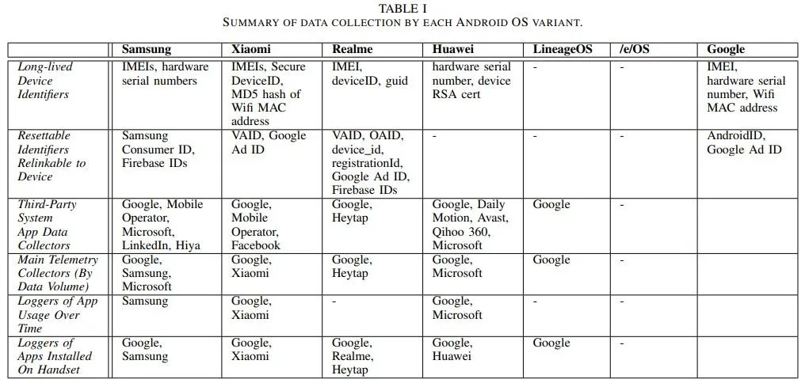
- https://forbiddenstories.org/pegasus-the-new-global-weapon-for-silencing-journalists/
- https://citizenlab.ca/2021/09/forcedentry-nso-group-imessage-zero-click-exploit-captured-in-the-wild/
- https://www.crowdstrike.com/blog/an-analysis-of-lightbasin-telecommunications-attacks/
- https://support.google.com/accounts/answer/3467281?hl=en
- https://www.apple.com/legal/privacy/data/en/location-services/
- https://www.cnet.com/tech/mobile/google-is-probably-tracking-your-location-even-if-you-turn-it-off-says-report/
- https://qz.com/1169760/phone-data/
- This also opens up the possibility of fingerprinting any visited website, despite the use of HTTPS, Tor or other encryption.
- https://support.apple.com/en-us/HT211227
- https://stackoverflow.com/questions/36180407/why-the-address-of-my-bluetoothdevice-changes-every-time-i-relaunch-the-app
- https://stackoverflow.com/questions/23421899/does-mac-address-changes-over-time-in-android
- Inspect the SIM tray or battery compartment of the phone to identify this number.
- https://en.wikipedia.org/wiki/International_Mobile_Equipment_Identity
- Including Android IMEI tracker applications.
- https://www.businessinsider.com/saudi-arabia-imei-track-runaways-2019-5
- https://theintercept.com/drone-papers/the-assassination-complex/
- https://itigic.com/can-government-spy-on-my-mobile-imei/
- https://www.thespyphone.com/portable-imsi-imei-catcher/
- https://en.wikipedia.org/wiki/IMSI-catcher
- https://en.wikipedia.org/wiki/International_mobile_subscriber_identity
- https://www.techopedia.com/definition/5067/international-mobile-subscriber-identity-imsi
- https://thehackernews.com/2019/02/location-tracking-imsi-catchers.html
- https://thehackernews.com/2016/11/imsi-track-cellphone.html
- https://simjacker.com/
- https://blog.adaptivemobile.com/simjacker-next-generation-spying-over-mobile
- https://www.lifehacker.com.au/2019/09/scam-alert-new-sim-card-attack-discovered/
The S@T (pronounced sat) Browser - or SIMalliance Toolbox Browser to give it its full name - is an application specified by the SIMalliance, and can be installed on a variety of UICC (SIM cards), including eSIMs. This S@T Browser software is not well known, is quite old, and its initial purpose was to enable services such as getting your account balance through the SIM card. Globally, its function has been mostly superseded by other technologies, and its specification has not been updated since 2009, however, like many legacy technologies it is still been used while remaining in the background.
- IoT devices with SIM cards can also be targeted.
- https://en.wikipedia.org/wiki/SIM_swap_scam
- For example, by pretending the mobile device has been lost or stolen, or that services are being switched to a new phone.
- https://www.vice.com/en/article/y3g8wb/hacker-got-my-texts-16-dollars-sakari-netnumber
- https://en.wikipedia.org/wiki/Signalling_System_No._7#Protocol_security_vulnerabilities
- https://berlin.ccc.de/~tobias/31c3-ss7-locate-track-manipulate.pdf
- https://www.forbes.com/sites/parmyolson/2015/10/14/hackers-mobile-network-backbone-ss7/
- https://www.bleepingcomputer.com/news/security/newer-diameter-telephony-protocol-just-as-vulnerable-as-ss7/
- https://blog.adaptivemobile.com/measuring-the-diameter-protecting-4g-networks
- https://www.5gradar.com/news/every-5g-network-is-at-risk-of-dos-sttacks-due-to-diameter-protocol-vulnerability
- https://blog.adaptivemobile.com/measuring-the-diameter-protecting-4g-networks
- https://www.infosecurity-magazine.com/news/concern-mounts-for-ss7-diameter/
- https://www.diva-portal.org/smash/get/diva2:951619/FULLTEXT01.pdf
- https://s3.documentcloud.org/documents/21018353/nsa-mobile-device-best-practices.pdf
- https://dl.acm.org/doi/abs/10.1145/3448300.3468499
- Notably the IC guide only recommends biometrics to protect low-value information.
- This normally involves closing all applications, restarting the device in "Safe mode", deleting recently downloaded applications, and restarting the device to check it functions normally. The device can also be scanned for security threats.
- https://jmp.chat/faq
- See: XMPP Clients.
- https://www.consumer.ftc.gov/blog/2019/10/sim-swap-scams-how-protect-yourself
- This document highlights the extremely detailed information that is available via a warrant. Interesting points include: the differing data retention periods for various telecommunication providers (ranging between 1-7 years), the tracking of wearable devices and burner phones, and the retention of cloud storage internet/web browsing history by some providers.
Categories: Documentation